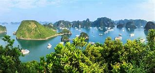
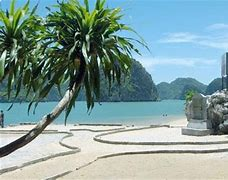
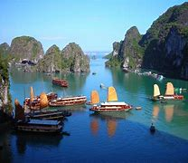
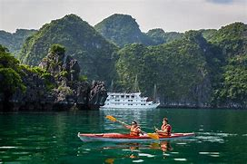

In 2000, UNESCO's World Heritage Committee inscribed Hạ Long Bay in the World Heritage List according to its outstanding examples representing major stages of the Earth's history and its original limestone karstic geomorphologic features. Hạ Long Bay and its adjacent areas consist of a part of the Sino-Vietnamese composite terrane having its development history from pre-Cambrian up to present day.
During Phanerozoic, terrigenous, volcanogenic and cherty-carbonate sediments containing in abundance graptolites, brachiopods, fishes, corals, foraminiferas, radiolarias, bivalves and flora, separated one from another by 10 stratigraphic gaps, but the boundary between Devonian and Carboniferous has been considered as continuous. The limestone karstic geomorphology of the bay was developed since Miocene, especially the cone-shaped hills (fengcong), or isolated high limestone karst towers (fenglin) with many remnants of old phreatic caves, old karstic foot caves, marine notch caves form magnificent limestone karst landforms as unique on the world.
The Quaternary geology was developed through 5 cycles with the intercalation of marine and continental environments. and cement additives, kaolin, silica sand, dolomite, quartzite of exogenous origin, and antimony, mercury of hydrothermal origin. Besides, there still are surface water, groundwater and thermal mineral water on the shore of the Hạ Long - Bái Tử Long Bays and other environmental resources. In terms of marine geology, this area is recorded as an especially coastal sedimentary environment. In the alkaline seawater environment, the chemical denudation process of calcium carbonate proceeds rapidly, creating wide, strangely shaped marine notches. The bottom surface sediments are various from clay mud to sand, however, silty mud and clay mud are dominated in distribution. Especially, the carbonate materials originated from organisms make up from 60 to 65% sedimentary content. The surface sediments of coral reefs are mainly sand and pebbles of which the carbonate materials occupy for more than 90%.
At the small, but wonderfully beautiful beaches , the sand sediments may be dominated quartz or carbonate materials.The sediment layers of intertidal zone, the upper sea bed with a plain surface conserving ancient rivers, systems of caves and its sediments, traces of ancient marine action forming distinctive notches, beaches and marine terraces, mangrove swamps are important evidence of geological events and processes taking place during Quaternary.
Hạ Long Bay has experienced at least 500 million years in various geological states of orogeny, marine transgression and marine regression. During the Ordovician and Silurian periods (500-410 million years ago), Hạ Long Bay was deep sea. During the Carboniferous and Permian periods (340-250 million years ago), Ha Long Bay was at shallow sea level.Before the 19th century, the name Hạ Long Bay had not been recorded in the old books of the country. It has been called An Bang, Lục Thủy, Vân Đồn. The dominated uplift movement of neotectonic and recent tectonic influenced deeply on topography of this area, and the present landscape of sea-islands was formed around 7 or 8 thousand years ago by the sea invasion during Holocene transgression begun at about 17-18 thousand years ago.
Particularly from the Holocene time, from about 11,000 years ago Cat Ba - Ha Long area has much archaeological evidence connecting variations in sea levels with the development of ancient cultures such as the Soi Nhu and Ha Long cultures. Due to a simultaneous combination of ideal factors such as thick, pale, grey, and strong limestone layers, which are formed by fine-grained materials; hot and moist climate and slow tectonic process as a whole; Ha Long Bay has had a complete karst evolution for 20 million years. There are many types of karst topography in the bay, such as karst field. Hạ Long Bay is a mature karst landscape developed during a warm, wet, tropical climate. The karst dolines were flooded by the sea, becoming the abundance of lakes that lie within the limestone islands. For example, Dau Be island at the mouth of the Bay has six enclosed lakes including those of the Ba Ham lakes lying within its fengcong karst. In the late 19th century, the name Hạ Long Bay appeared on the Maritime Map of France.
The present Hạ Long Bay, in fact, appeared after the Middle Holocene maximum transgression leaving ultimate zone of lateral undercutting in the limestone cliffs bearing many shells of oysters, having the 14C age as 2280 to >40,000 y. BP. Geological resources are abundant: anthracite, lignite, oil shale, petroleum, phosphate, limestone. The intertidal zone sediments are various from clay mud to sand and gravel depending to distinguished sedimentary environments such as mangrove marshes, tidal flats, beaches etc.
The sequence of stages in the evolution of a karst landscape over a period of 20 million years requires a combination of several distinct elements including a massive thickness of limestone, a hot wet climate and slow overall tectonic up lift. The process of karst formation is divided into five stages, the second of which is the formation of the distinctive do line karst. This is followed by the development of fengcong karst, which can be seen in the groups of hills on Bo Hon and Dau Be Inland.
These cones with sloping sides average 100m in height with the tallest exceeding 200m. Fenglin karst is characterised by steep separate towers. The hundreds of rocky islands with form the beautiful and famous landscape of the Bay are the individual towers of a classic Fenglin landscape where the intervening plains have been submerged by the sea. Most towers reach a height of between 50 and 100m with a height to width ratio of about 6. The Bay contains examples of the landscape elements of fengcong, fenglin and karst plain.
These are not separate evolutionary stages but the result of natural non – uniform processes in the denudation of a large mass of limestone. Marine erosion created the notches which in some places have been enlarged into caves. The marine notch is a feature of limestone coastline but, in Ha Long Bay, it has created the mature landscape. Due to a simultaneous combination of ideal factors such as thick, pale, grey, and strong limestone layers, which are formed by fine-grained materials; hot and moist climate and slow tectonic process as a whole; Ha Long Bay has had a complete karst evolution for 20 million years. There are many types of karst topography in the bay, such as karst field.
Within Hạ Long Bay, the main accessible caves are the older passages that survive from the time when the karst was evolving though its various stages of fengcong and fenglin. Three main types of caves can be recognized in the limestone islands (Waltham, T. 1998): Hạ Long Bay is a mature karst landscape developed during a warm, wet, tropical climate. The sequence of stages in the evolution of a karst landscape over a period of 20 million years requires a combination of several distinct elements including a massive thickness of limestone, a hot wet climate and slow overall tectonic up lift. The process of karst formation is divided into five stages, the second of which is the formation of the distinctive do line karst. This is followed by the development of fengcong karst, which can be seen in the groups of hills on Bo Hon and Dau Be Inland.
These cones with sloping sides average 100m in height with the tallest exceeding 200m. Fenglin karst is characterised by steep separate towers. The hundreds of rocky islands with form the beautiful and famous landscape of the Bay are the individual towers of a classic Fenglin landscape where the intervening plains have been submerged by the sea. Most towers reach a height of between 50 and 100m with a height to width ratio of about 6. The karst dolines were flooded by the sea, becoming the abundance of lakes that lie within the limestone islands. For example, Dau Be island at the mouth of the Bay has six enclosed lakes including those of the Ba Ham lakes lying within its fengcong karst. The Bay contains examples of the landscape elements of fengcong, fenglin and karst plain. These are not separate evolutionary stages but the result of natural non – uniform processes in the denudation of a large mass of limestone. Marine erosion created the notches which in some places have been enlarged into caves. The marine notch is a feature of limestone coastline but, in Ha Long Bay, it has created the mature landscape. Within Hạ Long Bay, the main accessible caves are the older passages that survive from the time when the karst was evolving though its various stages of fengcong and fenglin. Three main types of caves can be recognized in the limestone islands (Waltham, T. 1998):